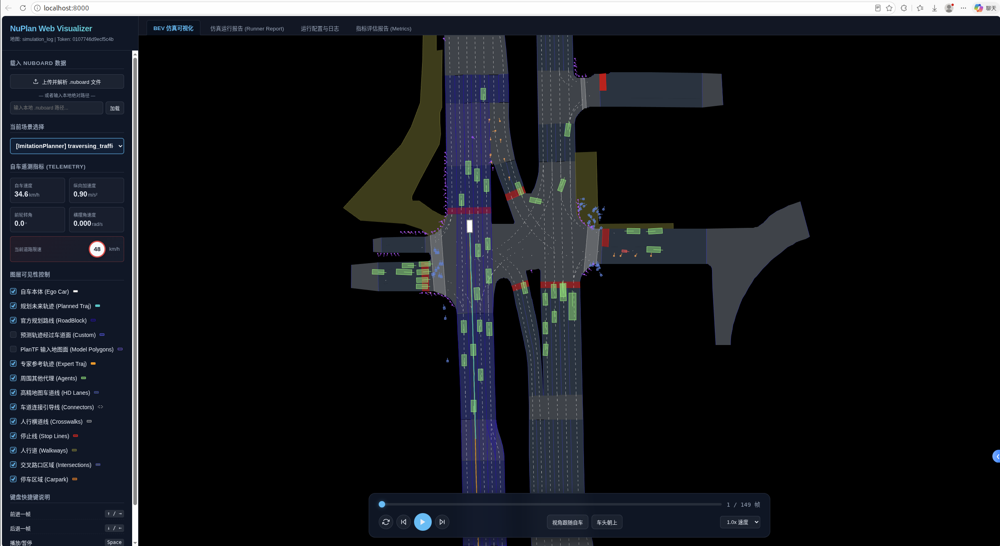
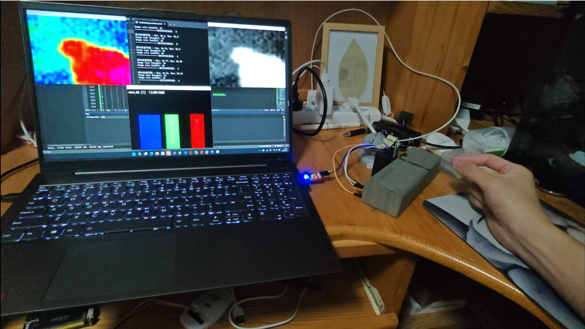
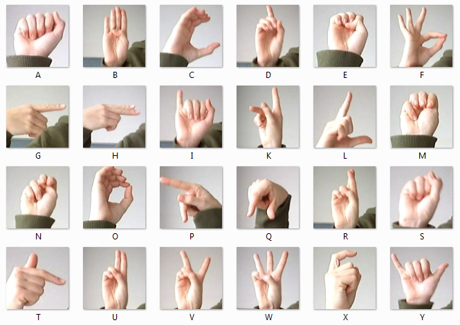
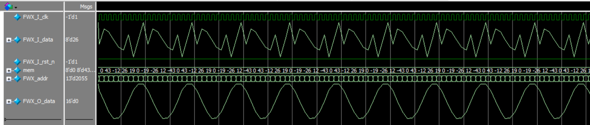
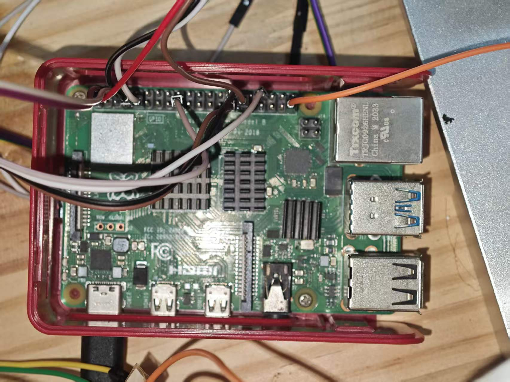
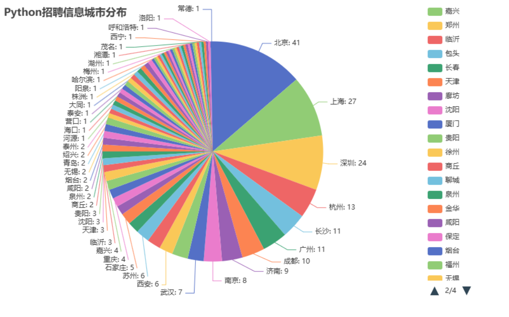

环境感知与表征
视觉特征提取、多传感器融合与空间表征，让模型理解周围环境。
你好，我是 zongyunfwx。
关注自动驾驶、具身智能与机器人导航，
探索从环境感知到自主决策的完整链路。

我的项目覆盖自动驾驶决策规划、视觉语言导航、世界模型、大模型后训练，以及嵌入式视觉和导航系统开发。
从 PyTorch 模型训练到 C/C++ 工程实现，从仿真闭环到 MCU 端侧部署，这里汇集算法设计、实验验证与系统开发中的实践。
查看研究与实践方向 ↗围绕智能系统的四个核心环节展开探索。
视觉特征提取、多传感器融合与空间表征，让模型理解周围环境。
探索视觉、语言与动作的对齐，让任务意图转化为可执行的行动。
连接定位建图、路径搜索和局部避障，关注动态环境下的决策。
重视数据质量、实验对比和推理效率，让每一次模型迭代有据可循。
技术实践与实验结果可在下方项目中查看。
自动驾驶、具身导航、大模型训练与软硬件开发，共 21 个项目。
从结构化感知与高精地图，到生成式轨迹规划、世界模型融合与交通灯决策。

用空间地图、全局拓扑图和世界模型连接 Waypoint 规划与导航决策。

基于 Qwen3.5-4B 的 NavGPT 复现与优化，在 Habitat MP3D 中完成导航闭环。

复现无人机视觉语言动作系统，贯通双视角感知、动态方向提示与连续控制。

从热成像数据处理与 CNN 建模，到轻量化、C 语言移植和 MCU 实时推理。

搭建医学问答后训练流程，以语义、流畅度和标签规则构建复合奖励。
独立实现 Actor–Critic、在线采样与 PPO-Clip，在 CartPole-v1 中验证策略收敛。
联合学习隐空间动力学与奖励，通过 MPPI 在线规划完成连续控制。

从 24 类手语字母分类训练，到摄像头逐帧识别与置信度显示。

结合状态空间先验与三路 GRU 增益估计，完成含噪时序信号的递推滤波。

连接模型决策、工具执行与结果回传，集成技能加载、上下文压缩和多 Agent 协作。

融合 GPS、里程计与 IMU，完成车载定位、实时控制和高速自主循迹。

结合视觉循迹、超声波测距与车间通信，实现双车跟随和协同控制。

九轴驱动、四元数融合和异常拒绝，连接传感采集与高频姿态输出。

以函数迭代和 Chebyshev 拟合研究姿态、速度、位置的高阶导航积分。

从 FIR 系数设计与定点量化，到对称抽头优化和 HDL 仿真验证。

在树莓派上集成惯导采集、伺服电机控制、多线程同步和 GTK 界面。

集成离线图像回放、算法中间过程可视化与控制曲线，支持视觉调试。
实现透明桌面窗口、序列帧动画、状态交互与 Windows 应用部署。

围绕结构化数据采集、接口监听和浏览器交互，构建自动化工具。
完成方块生成、旋转碰撞、计分、音效与游戏存档恢复的桌面游戏。
显示全部 21 个项目
欢迎交流自动驾驶、具身智能和机器人相关的技术想法。